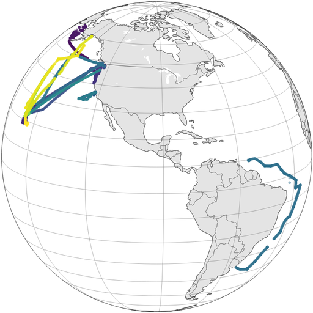
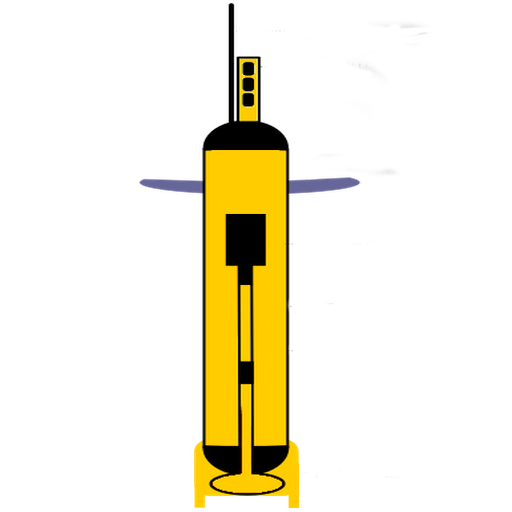

3. Data Catalog¶
Spatial and Temporal Resolutions are approximate - for more detail see each dataset documentation
| Datset Name | Spatial Coverage | Sensor Type | Make | Spatial Resolution | Temporal Resolution | Start Date | End Date |
|---|---|---|---|---|---|---|---|
| Sea Surface Temperature |  |
 |
Observation | 1/4° X 1/4° | Daily | 2013-01-01 | 2017-05-15 |
| Chlorophyll | |
|
Observation | 4km X 4km | Daily | 2012-01-01 | 2016-12-31 |
| Altimetry | |
|
Observation | 1/4° X 1/4° | Daily | 2013-01-01 | 2017-05-15 |
| Wind | |
|
Observation | 1/4° X 1/4° | Six Hourly | 2012-11-15 | 2017-12-04 |
| LCS | |
|
Observation | 1/25° X 1/25° | Daily | 2014-01-01 | 2017-05-01 |
| Eddy | |
|
Observation | Irregular | Daily | 2003-01-01 | 2015-04-23 |
| Pisces | |
 |
Model | 1/2° X 1/2° | Weekly | 2011-12-31 | 2017-12-09 |
| Darwin | |
|
Model | 1/2° X 1/2° | Monthly | 2013-08-11 | 2013-09-04 |
| SeaFlow |  |  |
Observation | 1/2° X 1/2° | Three Minutes | 2010-22-10 | 2017-06-13 |
| SOCAT | |
Observation | 1/2° X 1/2° | Irregular | 2003-01-06 | 2015-12-21 | |
| Argo |  |
 | Observation | Irregular | Irregular | 2002-09-08 | 2018-06-07 |
| HOT | |
Observation | Irregular | Irregular | 1988-10-31 | 2017-11-09 |
{kind=link}
{kind=link}